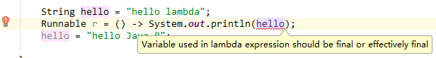

Java 8的Lambda表达式借鉴了C#和Scala等语言中的类似特性，简化了匿名函数的表达方式。Lambda表达式可以直接以内联的形式为函数式接口的抽象方法提供实现，并把整个表达式作为函数式接口的实例。什么是函数式接口？简单来说就是只包含一个抽象方法的接口，允许有默认的实现（使用default关键字描述方法）。函数式接口建议使用@FunctionalInterface注解标注，虽然这不是必须的，但是这样做更符合规范。
在Java 8之前，实现Runnable常用方式是编写一个匿名类：
1 | Thread thread = new Thread(new Runnable() { |
使用Lambda表达式后，上面的代码可以改造为：
1 | Thread thread = new Thread(() -> System.out.println("hello")); |
是不是很神奇？！很简洁？！
Lambda表达式解析
Lambda表达式的基本语法如下：
1 | (parameters) -> expression |
由语法可以看到，Lambda表达式包含了三个部分：
参数列表；
箭头
->把参数列表与Lambda主体分隔开；Lambda主体，只有一行代码的时候可以省略大括号和
return关键字。
比如下面这些Lambda表达式都是合法的：
1 | (String str) -> str.length() |
Lambda的使用场合
什么时候可以使用Lambda表达式？使用Lambda必须满足以下两个条件：
实现的对象是函数式接口的抽象方法；
函数式接口的抽象方法的函数描述符和Lambda表达式的函数描述符一致。
函数式接口
函数式接口的定义开头已经说了，这里就不再赘述。在Java 8之前，常见的函数式接口有java.util.Comparator，java.lang.Runnable等。拿java.util.Runnable来说，查看其源码如下：
1 |
|
这个接口只有一个抽象方法，并且使用@FunctionalInterface注解标注。
接口现在还可以拥有默认方法（即在类没有对方法进行实现时，其主体为方法提供默认实现的方法）。哪怕有很多默认方法，只要接口只定义了一个抽象方法，它就仍然是一个函数式接口。
函数描述符
函数描述符其实也可以理解为方法的签名。比如上述的Runnable抽象方法不接受参数，并且返回void，所以其函数描述符为() -> void。而() -> System.out.println("hello")Lambda表达式也是不接受参数，并且返回void，即其函数描述符也是() -> void。所以代码Runnable r = () -> System.out.println("hello");是合法的。
特殊的void兼容规则
如果一个Lambda的主体是一个语句表达式， 它就和一个返回void的函数描述符兼容（当然需要参数列表也兼容）。例如，以下Lambda是合法的，尽管List的add方法返回了一个 boolean，而不是Runnable抽象方法函数描述符() -> void所要求的void：
1 | List<String> list = new ArrayList<>(); |
更简洁的Lambda
编写一个类型转换的函数式接口：
1 |
|
编写一个Lambda表达式实现该函数式接口，用于实现String转换为Integer，代码如下：
1 | TransForm<String, Integer> t = (String str) -> Integer.valueOf(str); |
上面的Lambda表达式可以进一步简化为如下方式：
1 | TransForm<String, Integer> t = (str) -> Integer.valueOf(str); |
因为Java编译器会从上下文（目标类型）推断出用什么函数式接口来配合Lambda表达式，这意味着它也可以推断出适合Lambda的签名。就拿这个例子来说，TransForm的抽象方法transForm在本例中的函数描述符为(String) -> Integer，所以对应的Lambda的签名也是如此，即Lambda的参数即使不声名类型，Java编译器可以知道其参数实际上为String类型。
其实，上面的Labmda表达式还不是最简洁的，其还可以更进一步地简化为如下写法：
1 | TransForm<String, Integer> t = Integer::valueOf; |
你肯定很困惑，这还是Lambda表达式吗，箭头去哪里了？双冒号又是什么鬼？其实这种写法有一个新的名称，叫做方法的引用。
方法引用可以被看作仅仅调用特定方法的Lambda的一种快捷写法。它的基本思想是，如果一个Lambda代表的只是“直接调用这个方法”，那最好还是用名称来调用它，而不是去描述如何调用它，这样代码可读性更好。基本写法就是目标引用放在分隔符::前，方法的名称放在后面。
举几个Lambda及其等效方法引用的例子：
| Lambda表达式 | 等效方法引用 |
|---|---|
| (String s) -> System.out.println(s) | System.out::println |
| (str, i) -> str.substring(i) | String::substring |
| () -> Thread.currentThread().dumpStack() | Thread.currentThread()::dumpStack |
符号::除了出现在方法的引用外，它还常见于构造函数的引用中。为了演示什么是构造函数的引用，我们创建一个新的函数式接口：
1 |
|
创建一个Apple类：
1 | public class Apple { |
现在我们可以使用如下方式来创造一个Apple实例：
1 | Generator<String, Apple> g = Apple::new; |
这种通过ClassName::new的写法就是构造函数的引用。在这里Generator的抽象方法接收一个String类型参数，返回值类型为Apple，这和Apple类的构造函数相符合，所以这里编译可以通过。它等价于下面的写法：
1 | Generator<String, Apple> g = (color) -> new Apple(color); |
Lambda表达式访问变量
Lambda表达式可以访问局部final变量，成员变量和静态变量。
这里主要说下局部final变量。有无final关键字不重要，重要的是确保该变量的值不会被改变就行了。比如下面的例子可以编译通过：
1 | String hello = "hello lambda"; |
而下面的这个就会编译出错，因为变量hello的值被改变了：

Lambda表达式实战
假如现在有如下需求：现有一个包含了各种颜色不同重量的苹果的List，编写一个方法，从中筛选出满足要求的苹果。比如筛选出红色的苹果、红色并且重量大于1kg的苹果、绿色重量小于0.5kg的苹果或者红色大于0.5kg的苹果等等。
不使用Lambda
在没有接触Lambda之前，我们一般会这样做：
定义一个筛选的接口
1 | import cc.mrbird.java8.domain.Apple; |
然后根据筛选的条件来编写各个不同的实现类：
筛选出红色苹果的实现方法：
1 | import cc.mrbird.java8.domain.Apple; |
筛选出红色并且重量大于1kg的苹果的实现方法：
1 | import cc.mrbird.java8.domain.Apple; |
筛选出绿色重量小于0.5kg的苹果或者红色大于0.5kg的苹果的实现方法：
1 | import cc.mrbird.java8.domain.Apple; |
筛选苹果的方法：
1 | import cc.mrbird.java8.domain.Apple; |
开始筛选苹果：
1 | List<Apple> appleList = new ArrayList<>(); |
输出：
1 | red apple,weight:0.4 |
剩下的略。
可以看到，我们为了满足各种筛选条件创造了各种筛选接口的实现类，真正起作用的只有筛选方法中return那一行代码，剩下的都是一些重复的模板代码。使用Java 8中的Lambda可以很好的消除这些模板代码。
使用Lambda
AppleFilter接口实际上就是一个函数式接口，所以它的各种实现可以用Lambda表达式来替代，而无需真正的去写实现方法。
定义筛选接口：
1 | import cc.mrbird.java8.domain.Apple; |
筛选苹果的方法：
1 | import cc.mrbird.java8.domain.Apple; |
接下来便可以开始筛选了：
筛选红色的苹果：
1 | List<Apple> appleFilterList = AppleFilterMethod.filterApple(appleList, |
输出：
1 | red apple,weight:0.4 |
筛选出红色并且重量大于1kg的苹果:
1 | List<Apple> appleFilterList = AppleFilterMethod.filterApple(appleList, |
输出：
1 | red apple,weight:1.3 |
筛选出绿色重量小于0.5kg的苹果或者红色大于0.5kg的苹果:
1 | List<Apple> appleFilterList = AppleFilterMethod.filterApple(appleList, |
输出：
1 | red apple,weight:0.6 |
使用Lambda表达式消除了大量的样板代码，并且可以灵活的构造筛选条件！
《Java 8实战》读书笔记